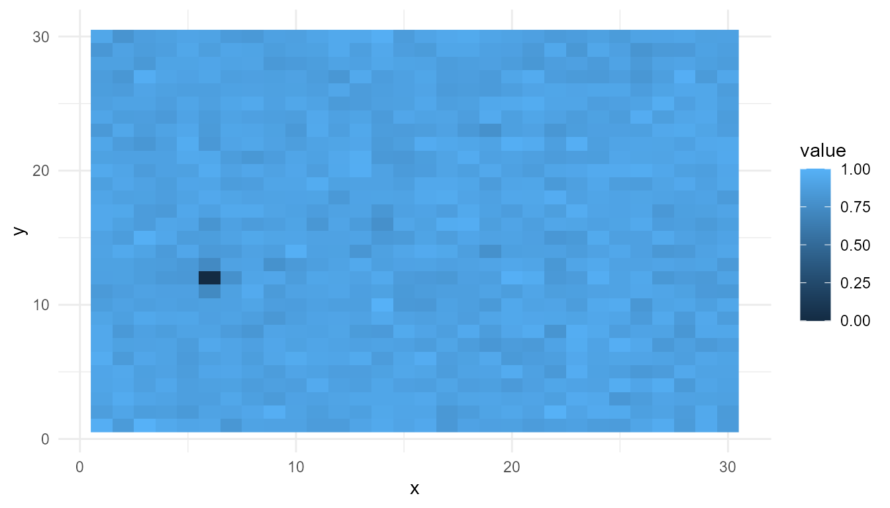
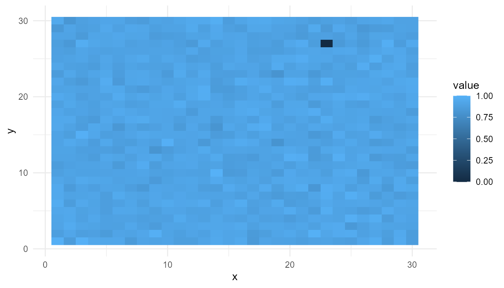
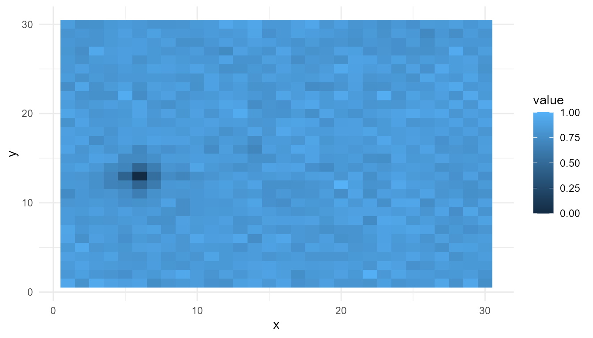
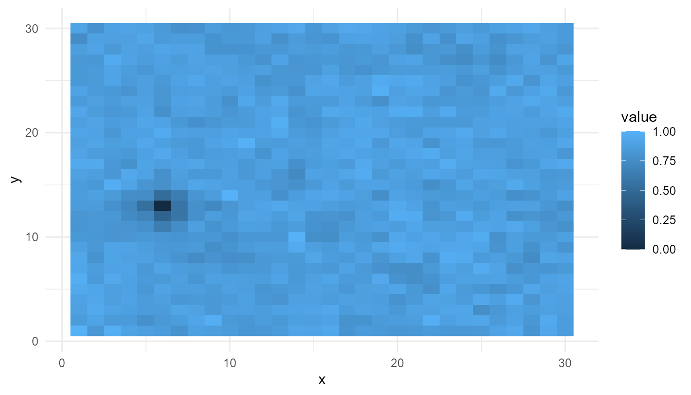
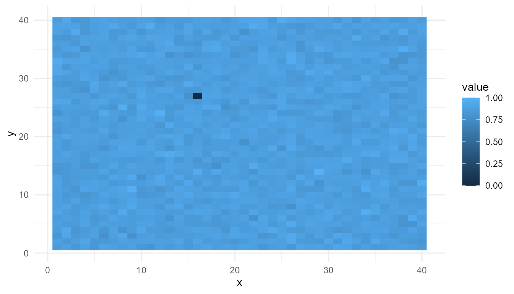

Self-Organization Tutorial
Source:vignettes/self-organization-tutorial.Rmd
self-organization-tutorial.RmdPurpose
This tutorial introduces simulate_self_organization(),
which creates a simplified grid-based model of self-organization.
The function is designed to help users explore how local feedback and diffusion can generate spatial patterns over time.
In this tutorial, you will learn how to:
- run a basic self-organization simulation;
- inspect the output;
- plot the final spatial pattern;
- compare diffusion settings;
- compare feedback settings;
- summarize outputs with
measure_emergence(); - interpret the results responsibly.
What the function represents
simulate_self_organization() creates a grid of values.
At each time step, the values are updated according to simplified
feedback and diffusion dynamics.
The model is not a real chemical, ecological, or biological simulation. It is a teaching model for exploring a general idea:
Spatial patterns can arise from repeated local updating.
Main arguments
| Argument | Meaning |
|---|---|
grid_size |
Size of the square grid |
steps |
Number of time steps to simulate |
diffusion |
Strength of smoothing or spreading across nearby cells |
feedback |
Strength of local reinforcement |
seed |
Random seed for reproducible results |
The two most important parameters are diffusion and
feedback.
Diffusion tends to smooth local differences. Feedback tends to amplify or reinforce local structure. The balance between them affects the final pattern.
Basic simulation
Start with a simple simulation.
so <- simulate_self_organization(
grid_size = 30,
steps = 40,
diffusion = 0.20,
feedback = 0.60,
seed = 2
)
head(so)
#> step x y value
#> 1 1 1 1 0.1848823
#> 2 1 2 1 0.7023740
#> 3 1 3 1 0.5733263
#> 4 1 4 1 0.1680519
#> 5 1 5 1 0.9438393
#> 6 1 6 1 0.9434750Inspect the output
The output is a data frame. Each row represents a grid location at a particular time step.
str(so)
#> 'data.frame': 36000 obs. of 4 variables:
#> $ step : int 1 1 1 1 1 1 1 1 1 1 ...
#> $ x : int 1 2 3 4 5 6 7 8 9 10 ...
#> $ y : int 1 1 1 1 1 1 1 1 1 1 ...
#> $ value: num 0.185 0.702 0.573 0.168 0.944 ...The main columns usually include:
| Column | Meaning |
|---|---|
step |
Time step |
x |
Horizontal grid position |
y |
Vertical grid position |
value |
Simulated value at that grid location |
This structure makes it possible to filter by time step and visualize the grid.
Plot the final pattern
To visualize the final state of the system, first keep only the last time step.
final_step <- subset(
so,
step == max(step)
)
head(final_step)
#> step x y value
#> 35101 40 1 1 0.9822507
#> 35102 40 2 1 0.8463782
#> 35103 40 3 1 1.0000000
#> 35104 40 4 1 0.9440521
#> 35105 40 5 1 0.9166127
#> 35106 40 6 1 0.9245696Now plot the final spatial pattern.
plot_emergence_sim(
final_step,
x = "x",
y = "y",
value = "value",
type = "raster"
)
Interpretation
The final pattern was not drawn directly. It was generated by repeated updating across the grid.
This illustrates the basic idea of self-organization:
Local interactions can produce system-level spatial structure.
The pattern should be interpreted as a simplified educational example, not as a realistic physical or biological system.
Compare diffusion settings
Diffusion controls how strongly values spread or smooth across the grid.
A low-diffusion setting may preserve more local variation. A high-diffusion setting may produce smoother patterns.
low_diffusion <- simulate_self_organization(
grid_size = 30,
steps = 40,
diffusion = 0.05,
feedback = 0.60,
seed = 2
)
low_final <- subset(
low_diffusion,
step == max(step)
)
plot_emergence_sim(
low_final,
x = "x",
y = "y",
value = "value",
type = "raster"
)
high_diffusion <- simulate_self_organization(
grid_size = 30,
steps = 40,
diffusion = 0.60,
feedback = 0.60,
seed = 2
)
high_final <- subset(
high_diffusion,
step == max(step)
)
plot_emergence_sim(
high_final,
x = "x",
y = "y",
value = "value",
type = "raster"
)
Summarize diffusion comparison
rbind(
low_diffusion = measure_emergence(
low_diffusion,
value_col = "value",
time_col = "step"
),
high_diffusion = measure_emergence(
high_diffusion,
value_col = "value",
time_col = "step"
)
)
#> n unique_states shannon_entropy mean_value sd_value
#> low_diffusion 36000 35924 15.12426 0.8577009 0.1348483
#> high_diffusion 36000 35924 15.12426 0.8287478 0.1165446
#> temporal_variability mean_absolute_change
#> low_diffusion 0.09046575 0.01611421
#> high_diffusion 0.07510070 0.02297257Interpretation of diffusion
Diffusion affects how values spread across the grid.
If diffusion is low, local differences may remain more visible. If diffusion is high, local differences may be smoothed more strongly.
The metrics help summarize the difference, but the plots are also important. A numerical summary alone cannot fully describe the spatial pattern.
Compare feedback settings
Feedback controls how strongly local values reinforce themselves.
A low-feedback setting may produce weaker structure. A high-feedback setting may amplify local differences more strongly.
low_feedback <- simulate_self_organization(
grid_size = 30,
steps = 40,
diffusion = 0.20,
feedback = 0.20,
seed = 2
)
low_feedback_final <- subset(
low_feedback,
step == max(step)
)
plot_emergence_sim(
low_feedback_final,
x = "x",
y = "y",
value = "value",
type = "raster"
)
high_feedback <- simulate_self_organization(
grid_size = 30,
steps = 40,
diffusion = 0.20,
feedback = 0.80,
seed = 2
)
high_feedback_final <- subset(
high_feedback,
step == max(step)
)
plot_emergence_sim(
high_feedback_final,
x = "x",
y = "y",
value = "value",
type = "raster"
)Summarize feedback comparison
rbind(
low_feedback = measure_emergence(
low_feedback,
value_col = "value",
time_col = "step"
),
high_feedback = measure_emergence(
high_feedback,
value_col = "value",
time_col = "step"
)
)
#> n unique_states shannon_entropy mean_value sd_value
#> low_feedback 36000 35924 15.12426 0.7778680 0.1582942
#> high_feedback 36000 35924 15.12426 0.8646283 0.1200662
#> temporal_variability mean_absolute_change
#> low_feedback 0.09867767 0.01629656
#> high_feedback 0.08042580 0.02038872Interpretation of feedback
Feedback can amplify local structure. When feedback is stronger, small differences may become more pronounced.
However, stronger feedback does not automatically mean “more emergence.” It only means that the model dynamics have changed. The result must be interpreted using both the visualization and the summary metrics.
Compare all runs
It can be useful to place several model runs in one summary table.
summary_table <- rbind(
baseline = measure_emergence(
so,
value_col = "value",
time_col = "step"
),
low_diffusion = measure_emergence(
low_diffusion,
value_col = "value",
time_col = "step"
),
high_diffusion = measure_emergence(
high_diffusion,
value_col = "value",
time_col = "step"
),
low_feedback = measure_emergence(
low_feedback,
value_col = "value",
time_col = "step"
),
high_feedback = measure_emergence(
high_feedback,
value_col = "value",
time_col = "step"
)
)
summary_table
#> n unique_states shannon_entropy mean_value sd_value
#> baseline 36000 35924 15.12426 0.8518298 0.1264448
#> low_diffusion 36000 35924 15.12426 0.8577009 0.1348483
#> high_diffusion 36000 35924 15.12426 0.8287478 0.1165446
#> low_feedback 36000 35924 15.12426 0.7778680 0.1582942
#> high_feedback 36000 35924 15.12426 0.8646283 0.1200662
#> temporal_variability mean_absolute_change
#> baseline 0.08424196 0.01843044
#> low_diffusion 0.09046575 0.01611421
#> high_diffusion 0.07510070 0.02297257
#> low_feedback 0.09867767 0.01629656
#> high_feedback 0.08042580 0.02038872Suggested exercises
Try changing the parameters and observing the results.
experiment <- simulate_self_organization(
grid_size = 40,
steps = 60,
diffusion = 0.15,
feedback = 0.75,
seed = 10
)
experiment_final <- subset(
experiment,
step == max(step)
)
plot_emergence_sim(
experiment_final,
x = "x",
y = "y",
value = "value",
type = "raster"
)
Questions to consider:
- What happens when diffusion is very low?
- What happens when diffusion is very high?
- What happens when feedback is very low?
- What happens when feedback is very high?
- Which settings produce the clearest spatial structure?
- Do the metrics match what you see in the plots?
Responsible interpretation
This model is intentionally simplified. It should be described as an educational abstraction of self-organization-like pattern formation.
It is better to say:
The simulation illustrates how feedback and diffusion can shape spatial patterns.
than:
The simulation proves how real biological self-organization works.
The model helps explain a concept. It does not replace detailed scientific models.
Key takeaway
simulate_self_organization() helps users explore how
local feedback and diffusion can produce spatial patterns over time.
The most important lesson is that system-level structure can arise from repeated local updating. By changing diffusion and feedback, learners can observe how different parameter settings affect the resulting pattern.